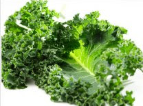

<?xml version="1.0" encoding="utf-8"?>
<!-- generator="Joomla! - Open Source Content Management" -->
<rss version="2.0" xmlns:atom="http://www.w3.org/2005/Atom">
	<channel>
		<title>Nutrition Edition</title>
		<description><![CDATA[]]></description>
		<link>http://jump6.com/index.php/health-fitness-and-lifestyle/nutrition-edition</link>
		<lastBuildDate>Tue, 08 Jan 2019 18:43:15 +0000</lastBuildDate>
		<generator>Joomla! - Open Source Content Management</generator>
		<atom:link rel="self" type="application/rss+xml" href="http://jump6.com/index.php/health-fitness-and-lifestyle/nutrition-edition?format=feed&amp;type=rss"/>
		<language>en-gb</language>
		<item>
			<title>List of Anti-Inflammatory Foods</title>
			<link>http://jump6.com/index.php/health-fitness-and-lifestyle/nutrition-edition/133-list-of-anti-inflammatory-foods</link>
			<guid isPermaLink="true">http://jump6.com/index.php/health-fitness-and-lifestyle/nutrition-edition/133-list-of-anti-inflammatory-foods</guid>
			<description><![CDATA[]]></description>
			<category>Nutrition Edition</category>
			<pubDate>Tue, 01 Aug 2017 15:02:50 +0000</pubDate>
		</item>
		<item>
			<title>16 under 100 calorie Foods</title>
			<link>http://jump6.com/index.php/health-fitness-and-lifestyle/nutrition-edition/131-16-under-100-calorie-foods</link>
			<guid isPermaLink="true">http://jump6.com/index.php/health-fitness-and-lifestyle/nutrition-edition/131-16-under-100-calorie-foods</guid>
			<description><![CDATA[<p><strong>These foods were selected based on two factors:</strong></p>
<ul>
<li>The first was that they must be full of nutrients like vitamins and antioxidants for your health.</li>
<li>The second is that they must be under 100 calories per 1 cup serving.</li>
</ul>
]]></description>
			<category>Nutrition Edition</category>
			<pubDate>Wed, 12 Jul 2017 15:11:42 +0000</pubDate>
		</item>
		<item>
			<title>Can Anti-Inflammatory Foods Really Help?</title>
			<link>http://jump6.com/index.php/health-fitness-and-lifestyle/nutrition-edition/132-can-anti-inflammatory-foods-really-help</link>
			<guid isPermaLink="true">http://jump6.com/index.php/health-fitness-and-lifestyle/nutrition-edition/132-can-anti-inflammatory-foods-really-help</guid>
			<description><![CDATA[<p style="text-align: justify;"><span style="font-size: 12pt; font-family: arial, helvetica, sans-serif;">Can certain foods take the heat out of inflammation, a condition now linked to a wide range of chronic health problems including heart disease and Alzheimer&rsquo;s? Some headlines suggest combating it is as easy as sipping a daily cup of turmeric tea &ndash; but is it really?&nbsp;<span class="InternetLink">Sue Quinn</span>investigates.</span></p>
]]></description>
			<category>Nutrition Edition</category>
			<pubDate>Tue, 01 Aug 2017 15:00:08 +0000</pubDate>
		</item>
		<item>
			<title>Kale</title>
			<link>http://jump6.com/index.php/health-fitness-and-lifestyle/nutrition-edition/129-kale</link>
			<guid isPermaLink="true">http://jump6.com/index.php/health-fitness-and-lifestyle/nutrition-edition/129-kale</guid>
			<description><![CDATA[<p>Kale is one of the most nutrient leafy vegetables to be consumed these days. Besides its rich green color, Kale is full of minerals and vitamins (Vit A, C, E and K), is low in calories, fat free and has phytochemicals called lutein and zeaxanthin.</p>
]]></description>
			<category>Nutrition Edition</category>
			<pubDate>Wed, 12 Jul 2017 14:54:51 +0000</pubDate>
		</item>
		<item>
			<title>The Real Truth Behind Nutrition Fads </title>
			<link>http://jump6.com/index.php/health-fitness-and-lifestyle/nutrition-edition/126-the-real-truth-behind-nutrition-fads</link>
			<guid isPermaLink="true">http://jump6.com/index.php/health-fitness-and-lifestyle/nutrition-edition/126-the-real-truth-behind-nutrition-fads</guid>
			<description><![CDATA[<p>Robyn Barefoot, RD Registered Dietitian</p>
<p>We&rsquo;ve heard of new trends within the news, media or maybe your neighbor, but do we know the real evidence behind it all? Tune in below to discover science-based evidence behind some of the most popular nutrition trends.</p>
]]></description>
			<category>Nutrition Edition</category>
			<pubDate>Mon, 10 Jul 2017 15:16:00 +0000</pubDate>
		</item>
		<item>
			<title>Are organic foods more nutritious?</title>
			<link>http://jump6.com/index.php/health-fitness-and-lifestyle/nutrition-edition/123-are-organic-foods-more-nutritious</link>
			<guid isPermaLink="true">http://jump6.com/index.php/health-fitness-and-lifestyle/nutrition-edition/123-are-organic-foods-more-nutritious</guid>
			<description><![CDATA[<p>BY PUNYA PURI, RD,CDE Many of my clients ask me if they should purchase organic foods over conventional (non organic) foods.</p>
]]></description>
			<category>Nutrition Edition</category>
			<pubDate>Thu, 01 Jun 2017 01:47:00 +0000</pubDate>
		</item>
		<item>
			<title>What is Hunger and Understanding It...</title>
			<link>http://jump6.com/index.php/health-fitness-and-lifestyle/nutrition-edition/125-what-is-hunger-and-understanding-it</link>
			<guid isPermaLink="true">http://jump6.com/index.php/health-fitness-and-lifestyle/nutrition-edition/125-what-is-hunger-and-understanding-it</guid>
			<description><![CDATA[<p style="text-align: center;"><span style="font-size: 14pt; font-family: arial, helvetica, sans-serif; color: #990099;">What is Hunger and Understanding It...</span></p>
<p style="margin-bottom: 0.0001pt;"><span style="font-size: 14pt; font-family: arial, helvetica, sans-serif;"><strong><span style="line-height: 120%; color: #333333;">Hunger is our bodies' way of driving us to find food and eat to stay alive. It is a very powerful human instinct which can compel us to extremes of behavior.<br /></span> </strong> </span></p>
]]></description>
			<category>Nutrition Edition</category>
			<pubDate>Tue, 11 Jul 2017 15:16:59 +0000</pubDate>
		</item>
		<item>
			<title>Registered Dietitian vs Nutritionist</title>
			<link>http://jump6.com/index.php/health-fitness-and-lifestyle/nutrition-edition/122-registered-dietitian-vs-nutritionist</link>
			<guid isPermaLink="true">http://jump6.com/index.php/health-fitness-and-lifestyle/nutrition-edition/122-registered-dietitian-vs-nutritionist</guid>
			<description><![CDATA[<p>A lot of people ask me the difference between a Registered Dietitian and a Nutritionist. Wished I had a nickel for every time someone asked me that!</p>
]]></description>
			<category>Nutrition Edition</category>
			<pubDate>Fri, 16 Jun 2017 01:44:52 +0000</pubDate>
		</item>
	</channel>
</rss>

<!-- Localized -->